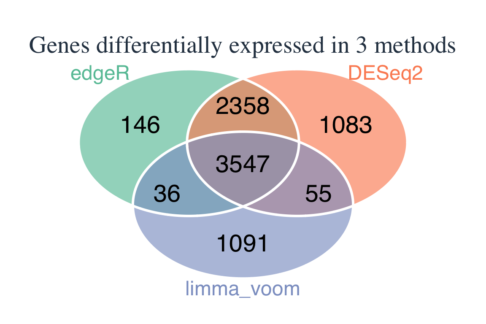
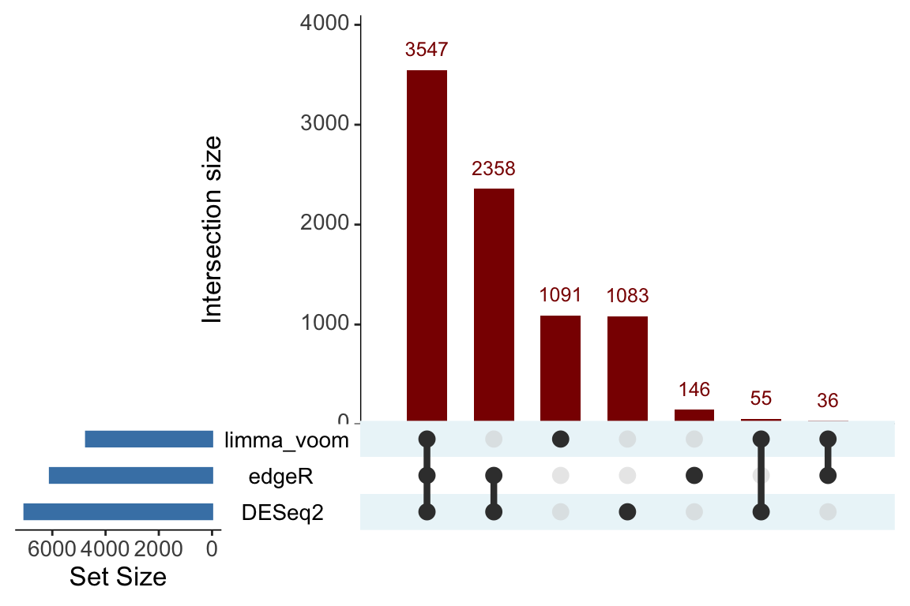

第 6 章 一致性评估
edgeR, DESeq2, limma-voom三种方法的差异表达基因分析结果的一致性评估。
6.2 可视化
6.2.1 韦恩图
图 1
gene_sets <- list(
edgeR = edgeR %>% filter(FDR < 0.05) %>%
filter(log2FoldChange > 1 | log2FoldChange < -1) %>% pull(SYMBOL),
DESeq2 = DESeq2 %>% filter(FDR < 0.05) %>%
filter(log2FoldChange > 1 | log2FoldChange < -1) %>% pull(SYMBOL),
limma_voom = limma_voom %>% filter(FDR < 0.05) %>%
filter(log2FoldChange > 1 | log2FoldChange < -1) %>% pull(SYMBOL)
)
draw_venn(x = gene_sets, "genes")图 2
library(VennDiagram)
library(grid)
library(RColorBrewer)
# 创建高级调色板
pal <- brewer.pal(3, "Set2")
grad_pal <- colorRampPalette(c("#f7f7f7", "#08306b"))
venn.plot <- venn.diagram(
x = gene_sets,
category.names = c("edgeR", "DESeq2", "limma_voom"),
filename = NULL,
imagetype = "pdf",
# 高级图形参数
fill = pal,
alpha = 0.65,
lwd = 3,
col = "white", # 边界颜色
# 标签优化
label.col = "black",
cex = 1.8,
fontfamily = "sans",
# 类别名称优化
cat.col = pal,
cat.cex = 1.5,
cat.fontfamily = "sans",
cat.just = list(c(0.5,0.5), c(0.5,0.5), c(0.5,0.5)),
# 背景优化
margin = 0.05,
main = "Genes differentially expressed in 3 methods",
main.cex = 1.8,
main.col = "#2c3e50"
)
# 添加自定义图例
grid.newpage()
pushViewport(viewport(width=0.8, height=0.8))
grid.draw(venn.plot)
6.2.2 UpSet图
library(UpSetR)
gene_sets <- list(
edgeR = edgeR %>% filter(FDR < 0.05) %>%
filter(log2FoldChange > 1 | log2FoldChange < -1) %>% pull(SYMBOL),
DESeq2 = DESeq2 %>% filter(FDR < 0.05) %>%
filter(log2FoldChange > 1 | log2FoldChange < -1) %>% pull(SYMBOL),
limma_voom = limma_voom %>% filter(FDR < 0.05) %>%
filter(log2FoldChange > 1 | log2FoldChange < -1) %>% pull(SYMBOL)
)
upset(fromList(gene_sets),
nsets = 3,
order.by = "freq",
mainbar.y.label = "Intersection size",
sets.x.label = "Set Size",
text.scale = 1.5, # 增加文本大小提高可读性
point.size = 3.5, # 增大矩阵中的点
line.size = 1.5, # 加粗连接线
main.bar.color = "darkred", # 设置主柱状图颜色
sets.bar.color = "steelblue", # 设置集合大小柱状图颜色
shade.color = "lightblue" # 设置连接点的阴影颜色
)